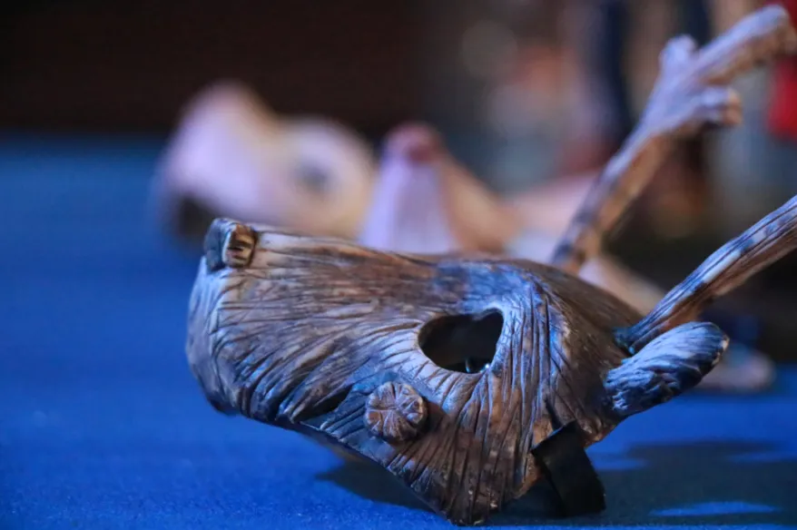
Asistimos por Primera Vez a Pixelatl
y no fue lo que esperábamos. Fue mejor, mucho mejor.

Comencemos por decir que aunque Pixelatl es enorme, es casi invisible. ¿Quién podría imaginar que entre calles comunes se abre un portal a donde todo es historias, color, fantasía y mucho aprendizaje? Pasará un año para que el portal vuelva a abrirse y quienes vayan regresarán con algo invaluable: posibilidades.
El encuentro ocurre en un hotel, no un hotel frío con salones para conferencias, sino en un precioso hotel llamado Las Mañanitas que adapta sus amplios jardines y espacios para que el festival ocurra. El resultado es una atmósfera amigable en donde la creatividad une a los asistentes y que al mismo tiempo revela la dedicación y el gusto de quienes lo hacen posible porque el nivel de organización necesario para materializar un evento así debe requerir enormes cantidades de planeación, gestión, organización y por supuesto la suma de todo eso: estrés (si algún organizador está leyendo esto: son unos héroes). Pixelatl reúne el presente y futuro de la industria de la animación en México.
¿Qué Hubo en Pixelatl 2019?
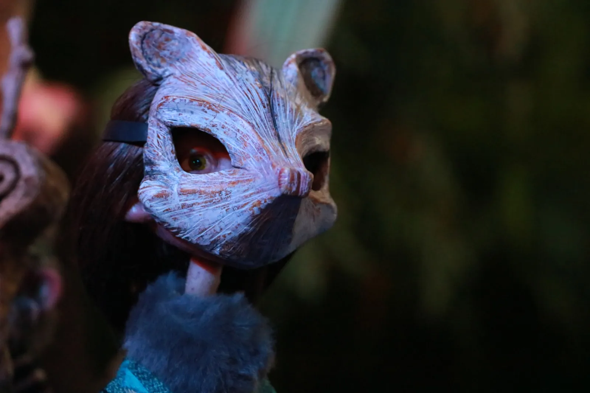
Algo que nos pareció genial fue el tema de este año: «El relato» y la importancia que tiene en nuestra sociedad. El relato nos da cohesión y ayuda a darle sentido a nuestra existencia a través de la experiencia y visión de otros. El tema tiene total consonancia con un evento cuyo centro son las historias en forma de comic, animación o videojuegos pero es remarcable que el festival no se quede solamente en una imagen promocional, sino que aporte su grano de arena con el mensaje implícito de crear historias para hacer un mundo mejor. Eso no tiene nada qué ver con vender entradas para el festival, sino con creer que a través de nuestros talentos podemos cambiar las cosas para bien. ¿Cómo no ser afín a eso?
Les contamos esto desde el punto de vista de un visitante, de alguien que compra un comic, un videojuego o se engancha al sillón a ver una serie de televisión, de quienes gozamos el talento de los que crean un personaje, una historia o algo tan fascinante que te conviertes en fan. Si nosotros hallamos algo valiosísimo en el festival ¿qué pueden hallar quienes se dedican o quieren dedicarse profesionalmente a vivir de imaginar personajes o historias?
1. Un Festival Internacional (de verdad internacional).
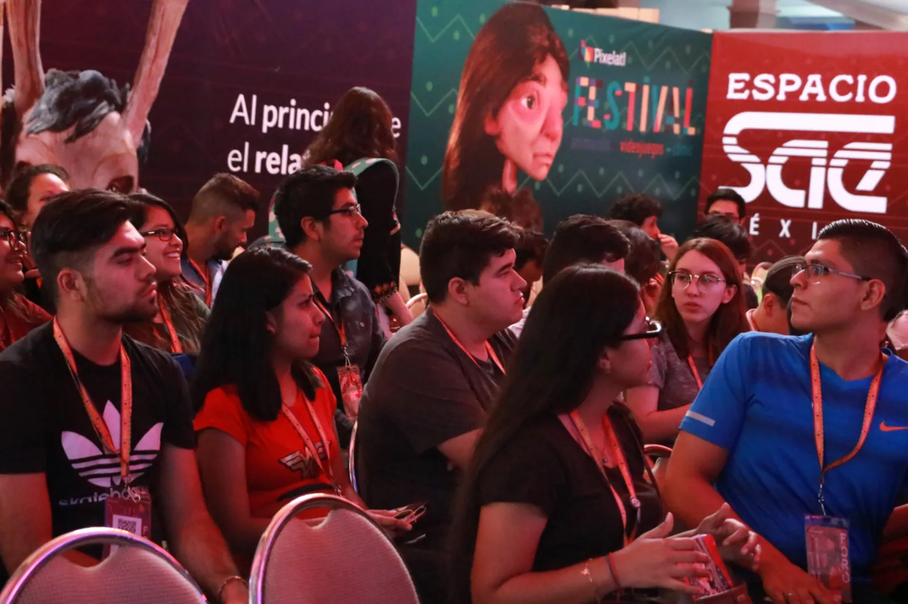
¿Se acuerdan de la serie «Daria«? ¿Qué tal escuchar y poder preguntar a su cocreadora, Susie Lewis, o como ella misma se definió «productora creativa», respecto al origen de la serie? O ver a Goro Fujita ilustrar en tiempo real, o si estás más en la parte narrativa escuchar a Kaitlin Tremblay platicar acerca de cómo hacer un guión para videojuego. Por supuesto también México tiene sus exponentes, por ejemplo en esta edición Estefani Gaona, productora de la película animada «Día de Muertos», platicó cómo sorteó su equipo todas las peripecias para ver la película finalmente en exhibición. Este año el país invitado fue España, lo que significó la asistencia de una delegación de profesionales en distintas ramas de la animación que platicaron acerca de su trabajo. Más allá de la imagen y apariencia de convención, Pixelatl es conocimiento puro. En serio, a Pixelatl se va a aprender.
2. A su Propia Especie.
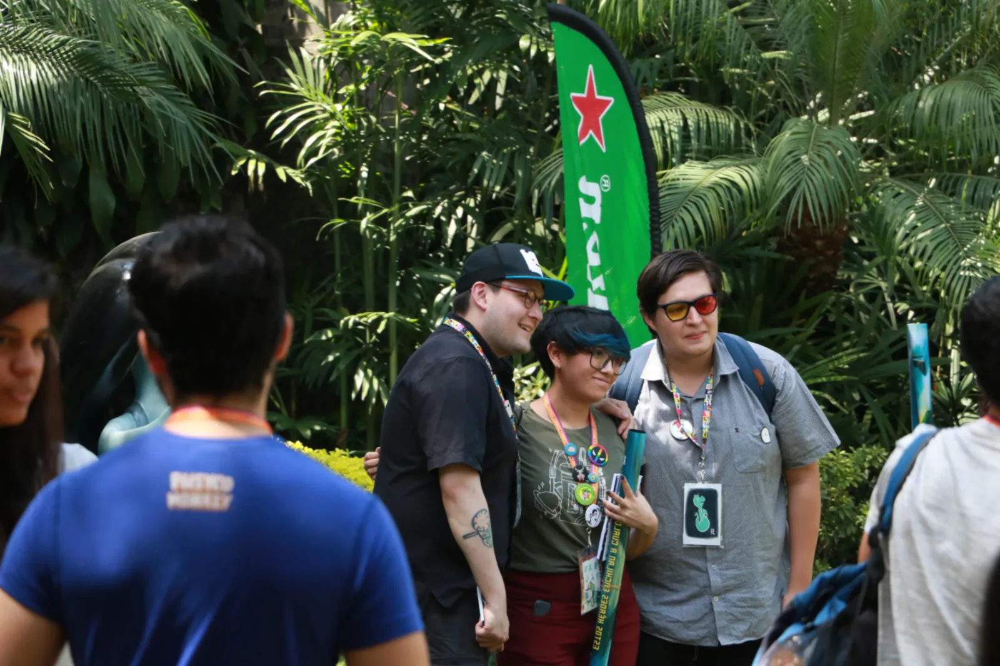
Nada como estar en un grupo que habla el mismo lenguaje y deja claro que hay muchas otras personas con expectativas y talentos similares que pueden complementar el propio. Parte del espíritu de Pixelatl es la creación de lazos. Cuando vayas no dudes en hablarle al de al lado. ¿Qué es todavía mejor que eso? Que no sólo puedes hablar con gente que quizás un día sea una leyenda, sino con quienes ya lo son. Así es cómo algunos asistentes a la edición 2019 pudieron platicar con Thomas Astruc, u otros creadores asistentes al festival, de lo más casual, frente a frente, sin la mesa de autógrafos de por medio.
3. En Donde Profesionalizar el Talento.
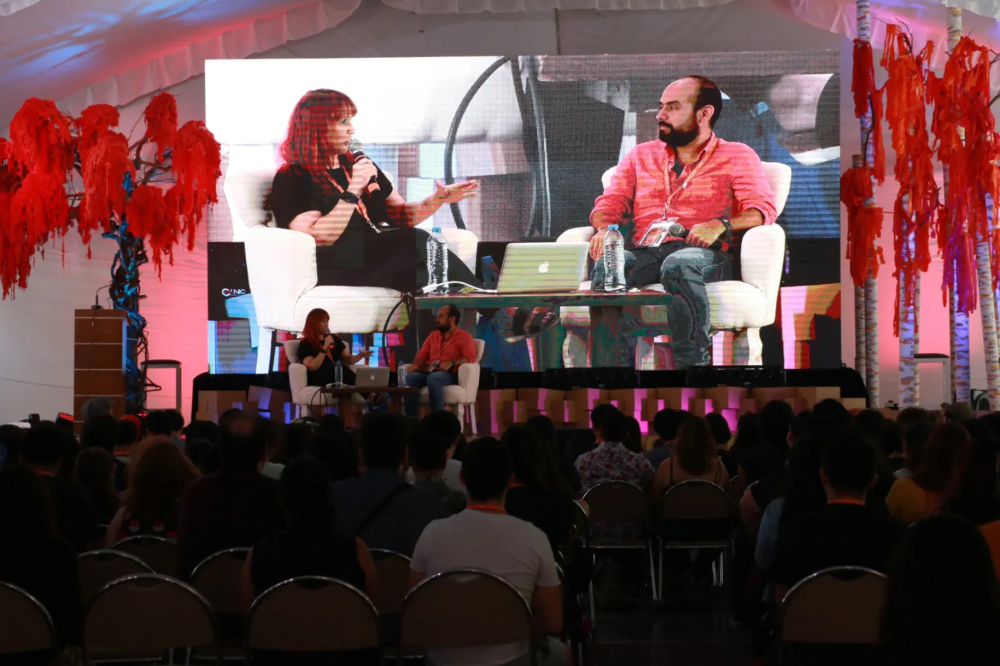
El talento viene de forma natural, pero ¿sabes cómo aplicarlo para convertir una visión en realidad? En Pixelatl encuentras a los mejores centros de formación y escuelas en los que un creador puede formarse. Escuelas como «SAE Institute México«, la filial mexicana que forma parte de la red de medios creativos digitales más grande del mundo. Coco School estuvo presente con ofertas académicas de nivel maestría como «Concept art & storyboarding» y Desarrollo y programación de videojuegos. También están presentes opciones como Amerike, instituto universitario con modelos internacionales de estudio ¿Por qué es importante saber esto? porque aunque el talento existe muchas veces no sabemos qué hacer con él o nos desalientan porque las carreras «creativas» no son algo serio. Pixelatl muestra que no es así, que es posible vivir de la creatividad de manera profesional. (Hay que trabajar durísimo, eso sí.)
4. Temas Diversos.
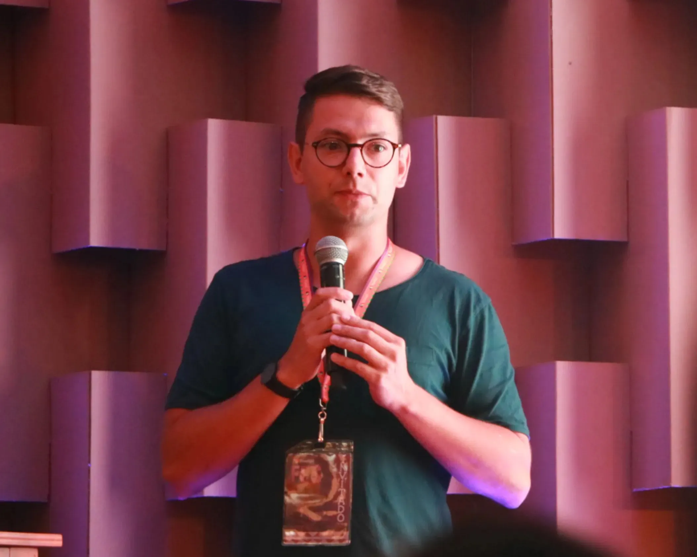
Las conferencias de Pixelatl abarcan temas teóricos, prácticos y experienciales invaluables para quien busca dedicarse de lleno a lo relacionado a animación, comic o videojuegos. ¿Quién te explicaría cómo armar, por ejemplo, un portafolio de trabajo especializado en ilustración para vender tu trabajo? ¿O quién te compartiría lo que tienes que hacer para «pitchar» tu gran proyecto (además de decirte qué debe cumplir).
5. Verticaleres y Proyecciones.
No entramos a ningún verticaler, pero dicen que son fantásticos y fueron tan nutritivas las conferencias a las que entramos que no les extrañamos. Lo que sí extrañamos fueron las proyecciones, no fuimos a ninguna pero porque no había tiempo para todo.
6. “Bisnes”.
¿Tienes un estudio ya montado? ¿Tienes un proyecto que pueda interesarle a una casa productora? ¿Buscas un aliado para complementar lo que te hace falta? Entonces considera un pase “Mercado” que como su nombre dice, es para intercambiar servicios, ahí te encuentras no sólo con talentos, sino con creativos y ejecutivos internacionales que están buscando el próximo éxito. Cabe aclarar que no estuvimos presentes en el área de Mercado pero indagando parece que la cosa trata de que te sientan con asesores y productores a quienes puedes “pitchar” tu proyecto, ellos saben que tienes algo que vender y ellos buscan qué comprar, si tienes algo bueno entre manos bien vale la pena uno de estos pases que además te da acceso a coloquios especiales y suministro constante de café, cerveza y refrigerios.
7. Posibilidades.
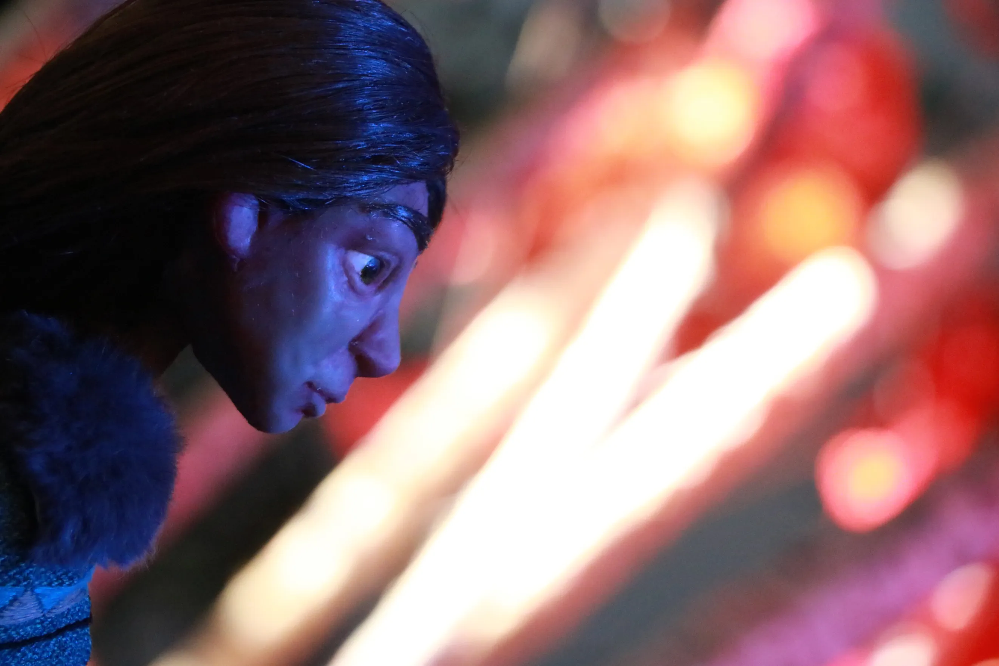
Sí, Pixelatl es conocimiento puro, pero también es un futuro alterno, uno mejor. Si estás comenzando en el mundo de la animación el lugar es excelente, estarás entre lo mejor del ramo, si ya tienes camino andado y tienes lo que se necesita puedes encontrar una puerta abierta, porque los grandes de la industria vienen aquí no sólo a enseñar, sino también a buscar tu talento.
Afila el lápiz y alístate para Pixelatl 2020.Conoce más del festival en "Pixelatl.com/es-MX" y en sus redes sociales "Facebook.com/Pixelatl".
Galería de fotos:
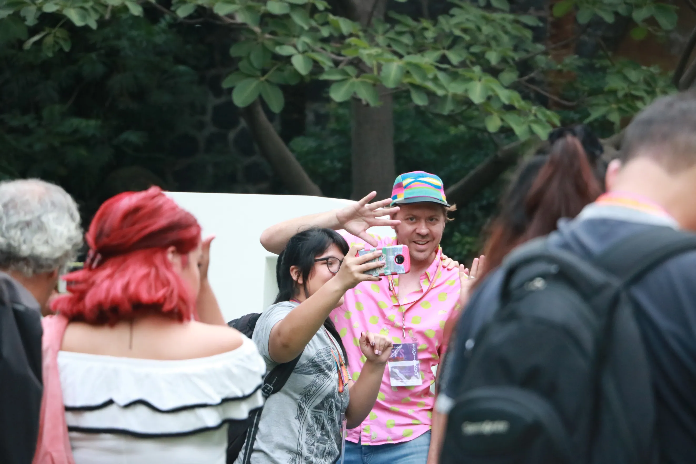
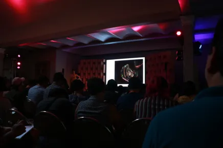
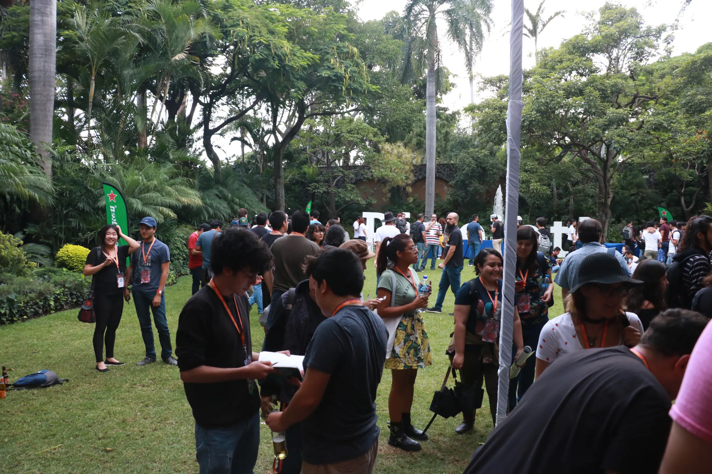
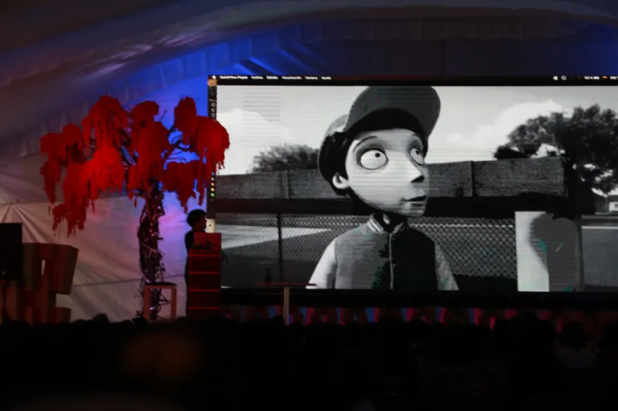
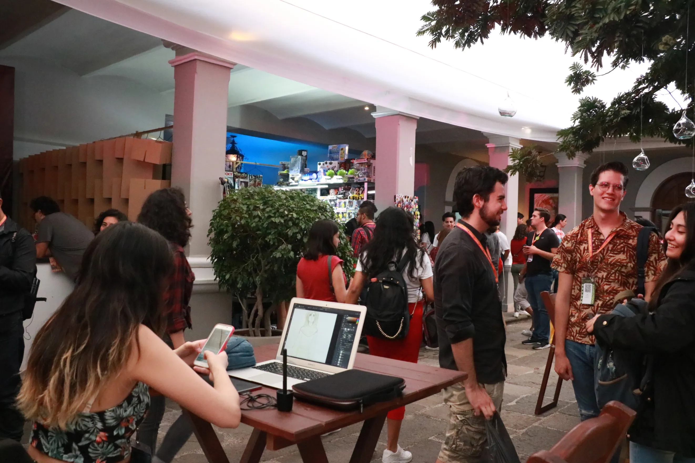
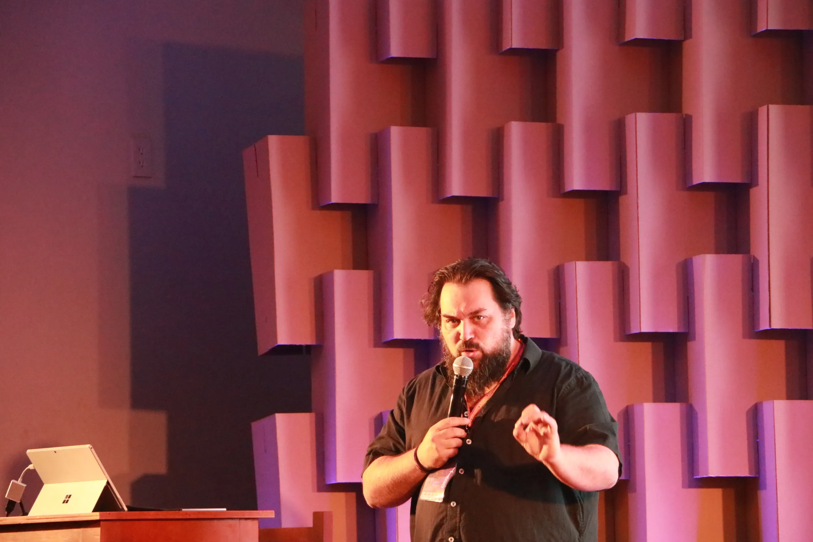
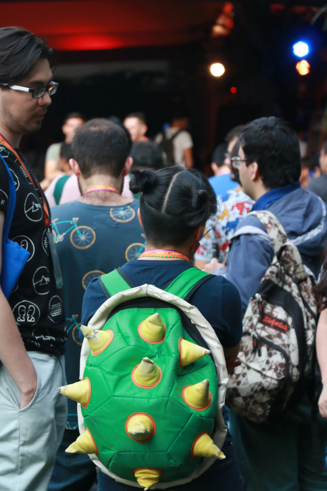
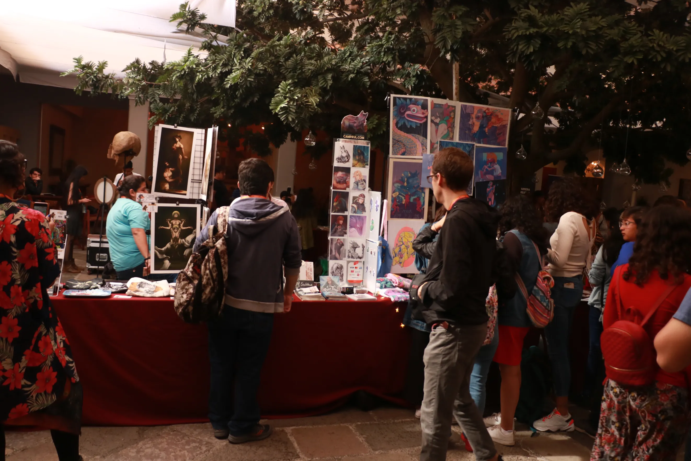
Esta nota fue hecha por la redacción de Café La Fauna. Entre servir café y atender mesas iremos compartiendo algunas notas y opiniones de lo que vimos en esta edición de Pixelatl 2019, visita nuestra página "Facebook.com/cafelafauna".